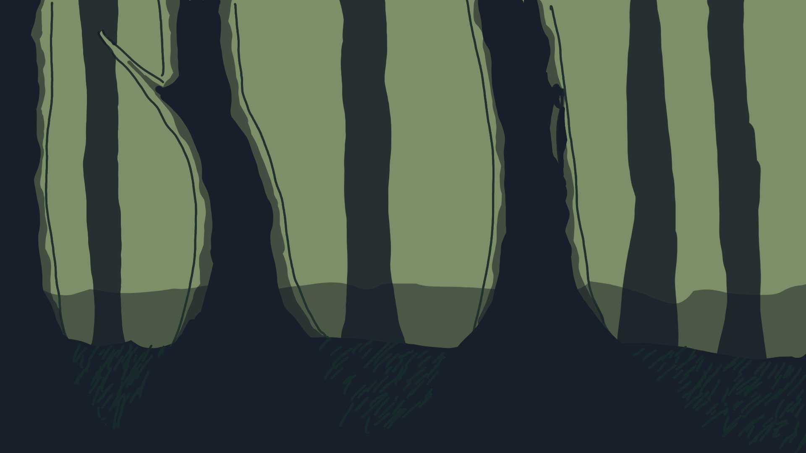

1. El refugio entre las montañas
En las profundidades de la montaña colombiana, entre la neblina y los campos de cultivo, la vida transcurría con la calma de las pequeñas veredas. Para Santiago, un niño de diez años, el mundo era un lugar seguro marcado por la rutina campesina, el cariño de sus padres y el murmullo constante del río que bordeaba su hogar.

2. La enseñanza del agua
Aquel río era el pulso vivo de la comunidad. Su madre solía recordárselo siempre con una sonrisa: “El día que te sientas perdido, busca el río. Sigue su corriente y él sabrá guiarte”. Esas palabras se convirtieron en la promesa de un hogar al que siempre se podía regresar.
3. La noche en que todo cambió
Sin embargo, la sombra del conflicto armado siempre acechó en los rincones más remotos. Una noche, la violencia irrumpe trágicamente en la vereda, destruyendo la tranquilidad de su hogar en cuestión de instantes y dejando a Santiago solo frente a una realidad devastadora.
4. El silencio del camino
Al salir de su escondite, el entorno ha cambiado para siempre: la naturaleza parece contener la respiración y el río ha dejado de cantar. Apretando contra su pecho el único recuerdo de sus padres, el niño entiende que quedarse no es una opción si quiere sobrevivir.
5. El viaje por la supervivencia
Guiado únicamente por el cauce del agua en silencio y los recuerdos de su familia, Santiago emprende un peligroso viaje hacia la ciudad. A través de profundos bosques y retenes invisibles, deberá aprender a moverse entre las sombras y descifrar un territorio en guerra donde la única regla para seguir con vida es no ser visto.